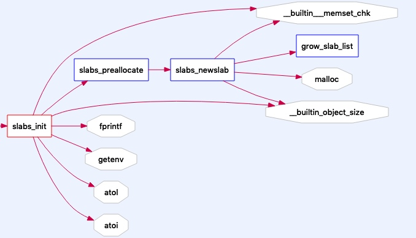
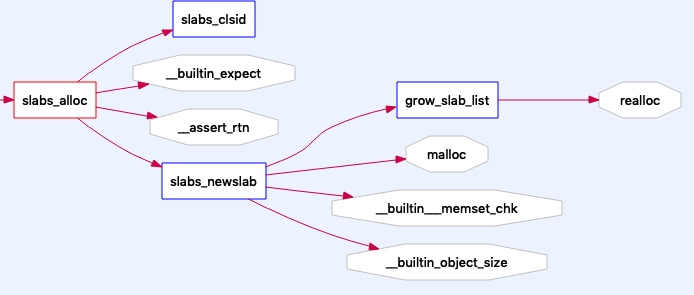

本文基于memcached 1.2.0写成
memcached的内存分配器slab.c不过300行代码，还是比较容易上手分析的。
内存模型如下：

一个slabclass_t管理了多个slab，每个slab被称为内存页，每个slab管理多个item的内存空间
核心函数
| 函数名 | 作用 |
|---|---|
| slabs_init | 初始化slabclass_t结构体数组 |
| slabs_clsid | 通过内存大小从slabclass_t数组中找到最小能满足的结构体 |
| slabs_preallocate | 给每个slabclass_t先分配一个slab(页)的内存(1mb) |
| slabs_newslab | 给指定的slabclass分配一个新的slab存放到slab_list上，同时slabs、end_page_ptr、end_page_free发生相应变化 |
| grow_slab_list | 动态增加slab_list数组的大小 |
| slabs_alloc | 从内存分配器中取出一个空的item内存来使用 |
| slabs_free | 将item所在的内存指针重新标记成可使用，相当于删除了item |
| slabs_stats | 从slabclass_t结构体上获取内存分配器的使用情况 |
其中被slab.c以外的文件调用的函数有slabs_alloc、slabs_free、slabs_init和slabs_stats
slabs_init内部调用关系

slabs_alloc内部调用关系

内存分配生命周期
初始化机制-slabs_init()函数
- 计算每个item的初始占用的内存大小
c unsigned int size = sizeof(item) + settings.chunk_size; - 根据size值和每个内存页1mb大小算出当前slabclass_t的每个slab能够存放多少个item放到perslab属性上
- 按照factor这个缩放值增大size(size=size*factor)继续初始化下一个slabclass_t
获取item的内存机制-slabs_alloc()函数
这里有一个分支，如果当前slabclass的当前slab还有剩余的内存空间，直接就分配了，参考：
if (! (p->end_page_ptr || p->sl_curr || slabs_newslab(id)))
return 0;
三种情况
- 当前页还有内存空间 p->end_page_ptr
- 有item被删除了释放的空间p->sl_curr
- 给当前的slabclass_t分配一个新页 slabs_newslab(id)
/* return off our freelist, if we have one */
if (p->sl_curr)
return p->slots[--p->sl_curr];
/* if we recently allocated a whole page, return from that */
if (p->end_page_ptr) {
void *ptr = p->end_page_ptr;
if (--p->end_page_free) {
p->end_page_ptr += p->size;
} else {
p->end_page_ptr = 0;
}
return ptr;
}
删除item的内存释放机制
主要就是把删除的item放进slabclass_t的slots数组中，申请内存时，优先从这个slots中获取，达到这个memcached解决内存碎片的目的
这里有个对这个存放被删除的item的slots数组扩容的操作
if (p->sl_curr == p->sl_total) { /* need more space on the free list */
int new_size = p->sl_total ? p->sl_total*2 : 16; /* 16 is arbitrary */
void **new_slots = realloc(p->slots, new_size*sizeof(void *));
if (new_slots == 0)
return;
p->slots = new_slots;
p->sl_total = new_size;
}
可以看到这个slots数组初始容量是16，后续每都是按照2倍容量进行扩容的
一些注意的点
memcached的源代码命名不规范，可能在阅读源码上造成极大的干扰
注释不清楚具有迷惑性
memcached使用注意事项
- 每个value大小不能超过1mb，可以修改POWER_BLOCK宏，重新编译memcached
- memcache是不会调用free函数释放内存的
参考资料
- https://blog.csdn.net/initphp/article/details/44888555
- https://blog.csdn.net/luotuo44/article/details/42737181
- https://holmeshe.me/cn/understanding-memcached-source-code-I/
- https://holmeshe.me/cn/understanding-memcached-source-code-II/
- https://holmeshe.me/cn/understanding-memcached-source-code-III/
持续更新中...